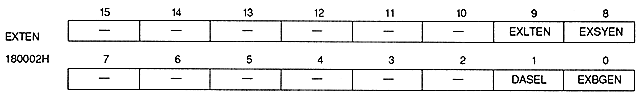

External latch enable bit : External latch enable bit (EXLTEN), bit 9
EXLTEN | Articles |
0 | Latch when external signal enable register is read |
1 | Latch by external signal |
∙ The latched H counter value can be read with the H counter register, and the V counter value can be read with the V counter register.
Set to 1 when reading H and V counter values with an external signal such as a light gun. Normally set to 0.
EXSYEN | Processing |
0 | Do not input external sync signal |
1 | Input an external sync signal to synchronize the TV screen display with the outside |
Enter 1 to synchronize screen display with other devices. Normally set to 0.